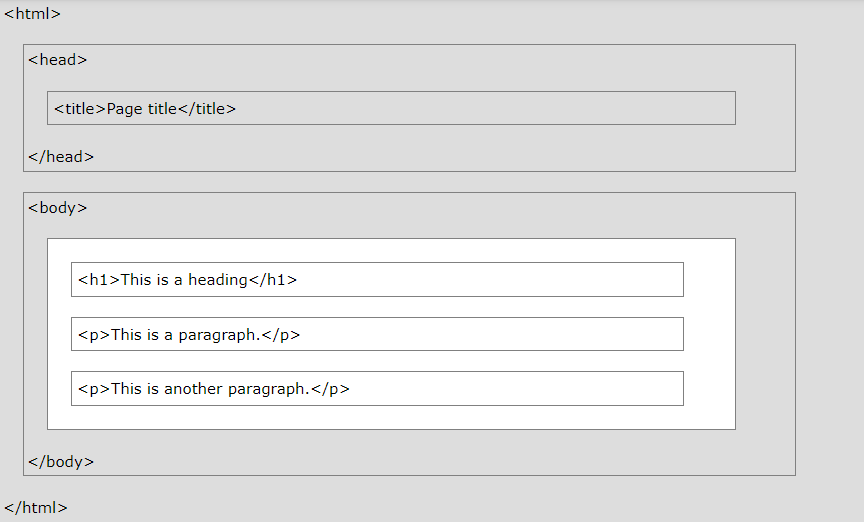

HTML-ի Կառուցվածքը
HTML-ը վեբ էջեր ստեղծելու ստանդարտ կմախքային լեզու է:
Ի՞նչ է HTML-ը
- HTML-ը նշանակում է Hyper Text Markup Language
- HTML-ը վեբ էջեր ստեղծելու ստանդարտ նշագրման լեզու է
- HTML-ը նկարագրում է վեբ էջի կառուցվածքը
- HTML-ը բաղկացած է մի շարք տարրերից
- HTML տարրերը պիտակավորում են բովանդակության այնպիսի հատվածներ,
ինչպիսիք են «սա վերնագիր է», «սա պարբերություն է», «սա հղում է» և այլն:
Պարզ HTML փաստաթուղթ
ՕՐԻՆԱԿ
<!DOCTYPE html>
<html>
<head>
<title>Page Title</title>
</head>
<body>
<h1>My First Heading</h1>
<p>My first paragraph.</p>
</body>
</html>
Բացատրված օրինակը
- <!DOCTYPE html> հռչակագիրը սահմանում է, որ այս փաստաթուղթը HTML5 փաստաթուղթ է
- <html> տարրը HTML էջի արմատային տարրն է
- <head> տարրը պարունակում է մետա տեղեկատվություն HTML էջի մասին
- <title> տարրը նշում է վերնագիր HTML էջի համար (որը ցուցադրվում է դիտարկիչի
վերնագրի տողում կամ էջի ներդիրում) - <body> տարրը սահմանում է փաստաթղթի մարմինը և հանդիսանում է բոլոր տեսանելի
բովանդակության կոնտեյներ, ինչպիսիք են վերնագրերը, պարբերությունները, պատկերները,
հիպերհղումները, աղյուսակները, ցուցակները և այլն: - <h1> տարրը սահմանում է մեծ վերնագիր
- <p> տարրը սահմանում է պարբերություն
Ի՞նչ է HTML տարրը:
HTML տարրը սահմանվում է սկզբնական մեկ հատանի չակերտով, որոշ բովանդակությամբ և ավարտի մեկ հատանի չակերտով.
<tagname>Բովանդակությունը գտնվում է այստեղ...</tagname>
HTML տարրը ամեն ինչ է՝ սկզբի թեգից մինչև վերջ:
Նշում: որոշ HTML տարրեր չունեն բովանդակություն (ինչպես <br> տարրը): Այս տարրերը կոչվում են դատարկ տարրեր: Դատարկ տարրերը վերջի թեգ չունեն:
Վեբ բրաուզերներ
Վեբ բրաուզերի (Chrome, Edge, Firefox, Safari) նպատակը HTML փաստաթղթերը կարդալն ու դրանք ճիշտ ցուցադրելն է։
Բրաուզերը չի ցուցադրում HTML թեգերը, այլ օգտագործում է դրանք՝ որոշելու, թե ինչպես ցուցադրել փաստաթուղթը.

HTML էջի կառուցվածքը
Ստորև ներկայացված է HTML էջի կառուցվածքը։
Նշում: <body> բաժնի բովանդակությունը (վերևի սպիտակ տարածքը) կցուցադրվի բրաուզերում: <title> տարրի բովանդակությունը կցուցադրվի բրաուզերի վերնագրի տողում կամ էջի ներդիրում:
HTML հիմնական օրինակներ
Այս գլխում մենք ցույց կտանք մի քանի հիմնական HTML օրինակներ:
Մի անհանգստացեք, եթե մենք օգտագործում ենք թեգեր, որոնց մասին դեռ չեք իմացել:
<!DOCTYPE> հռչակագիր
<!DOCTYPE> հայտարարությունը ներկայացնում է փաստաթղթի տեսակը և օգնում դիտարկիչներին ճիշտ ցուցադրել վեբ էջերը:
Այն պետք է հայտնվի միայն մեկ անգամ՝ էջի վերևում (մինչև HTML թեգը):
HTML5-ի <!DOCTYPE> հռչակագիրը
<!DOCTYPE html>
HTML վերնագրեր
HTML վերնագրերը սահմանվում են <h1>-ից <h6> թեգերով:
<h1> սահմանում է ամենակարևոր վերնագիրը: <h6> սահմանում է ամենաքիչ կարևոր վերնագիրը.
HTML պարբերություններ
HTML պարբերությունները սահմանվում են <p> թեգով:
HTML հղումներ
HTML հղումները սահմանվում են <a> թեգով.
Հղման նպատակակետը նշված է href ատրիբուտով:
Ատրիբուտները օգտագործվում են HTML տարրերի մասին լրացուցիչ տեղեկություններ տրամադրելու համար:
Ատրիբուտների մասին ավելին կիմանաք հաջորդ գլխում:
HTML նկարներ
HTML պատկերները սահմանվում են <img> թեգով:
Աղբյուրի ֆայլը (src), նկարագրման տեքստը (alt), width և height տրամադրվում են որպես ատրիբուտներ.
HTML ատրիբուտներ
HTML ատրիբուտները լրացուցիչ տեղեկություններ են տալիս HTML տարրերի մասին:
- Բոլոր HTML տարրերը կարող են ունենալ ատրիբուտներ
- Ատրիբուտները միշտ նշվում են սկզբնական թեգում
- Ատրիբուտները սովորաբար գրվում են անուն/արժեք զույգ չակերտներով, ինչպիսիք են՝ name="արժեքը"
HTML ատրիբուտներ
Հղումների ատրիբուտներ
HTML հղումները սահմանվում են <a> թեգով.
Հղման նպատակակետը նշված է href ատրիբուտով:
Ատրիբուտները օգտագործվում են HTML տարրերի մասին լրացուցիչ տեղեկություններ տրամադրելու համար:
Նկարների ատրիբուտներ
HTML պատկերները սահմանվում են <img> թեգով:
Աղբյուրի ֆայլը (src), նկարագրման տեքստը (alt), width և height տրամադրվում են որպես ատրիբուտներ.
Ոճի ատրիբուտ
Style ատրիբուտ օգտագործվում է տարրին ոճեր ավելացնելու համար, ինչպիսիք են գույնը, տառատեսակը, չափը և այլն:
Leng ատրիբուտ
Դուք միշտ պետք է ներառեք lang ատրիբուտը <html> թեգի ներսում՝ վեբ էջի լեզուն հայտարարելու համար: Սա նախատեսված է օգնելու որոնման համակարգերին և բրաուզերներին:
Հետևյալ օրինակը նշում է անգլերենը որպես լեզու:
Երկրի կոդերը կարող են նաև ավելացվել լեզվի կոդի մեջ lang ատրիբուտում: Այսպիսով, առաջին երկու նիշերը սահմանում են HTML էջի լեզուն, իսկ վերջին երկու նիշերը՝ երկիրը:
Հետևյալ օրինակը նշում է անգլերենը որպես լեզու և Միացյալ Նահանգները որպես երկիր.
Վերանգրի ատրիբուտ
Վերնագրի ատրիբուտը սահմանում է որոշ լրացուցիչ տեղեկություններ թեգի մասին:
Վերնագրի ատրիբուտի արժեքը կցուցադրվի որպես գործիքի հուշում, երբ մկնիկը անցնի թեգի վրայով՝
Գլխի Անփոփում
- Բոլոր HTML թեգերը կարող են ունենալ ատրիբուտներ
- <a>-ի href ատրիբուտը նշում է այն էջի URL-ը, ուր գնում է հղումը
- <img>-ի src ատրիբուտը նշում է ցուցադրվող պատկերի ուղին
- <img>-ի width և height ատրիբուտները տրամադրում են պատկերների չափը
- <img>-ի alt ատրիբուտը պատկերի համար նկարագրային տեքստ է տրամադրում
- Style ատրիբուտը օգտագործվում է թեգերին ոճեր ավելացնելու համար, ինչպիսիք են գույնը, տառատեսակը, չափը և այլն
- <html> թեգի lang ատրիբուտը հայտարարում է վեբ էջի լեզուն
- Title ատրիբուտը սահմանում է որոշ լրացուցիչ տեղեկություններ թեգի մասին
HTML Վերնագրեր
HTML վերնագրերը դրանք՝ վերնագրեր կամ ենթագրեր են, որոնք ցանկանում եք ցուցադրել վեբ էջում:
HTML Վերնագրեր
HTML վերնագրերը սահմանվում են <h1>-ից <h6> թեգերով:
<h1> սահմանում է ամենակարևոր վերնագիրը: <h6> սահմանում է ամենաքիչ կարևոր վերնագիրը:
ՕՐԻՆԱԿ
<h1>Վերնագիր</h1>
<h2>Վերնագիր</h2>
<h3>Վերնագիր</h3>
<h4>Վերնագիր</h4>
<h5>Վերնագիր</h5>
<h6>Վերնագիր</h6>
Նշում: Բրաուզերներն ավտոմատ կերպով ավելացնում են որոշ սպիտակ տարածություն (margin) վերնագրից առաջ և հետո:
Ավելի մեծ վերնագրեր
Յուրաքանչյուր HTML վերնագիր ունի հիմնական չափս: Այնուամենայնիվ, դուք կարող եք նշել ցանկացած վերնագրի չափը style հատկանիշով, օգտագործելով CSS-ի font-size հատկությունը.
HTML Պարագրաֆ
Պարբերությունը միշտ սկսվում է նոր տողից և օգտագործվում է որպես տեքստի բլոկ։
HTML Պարագրաֆներ
HTML <p> թեգը սահմանում է պարբերություն:
Պարբերությունը միշտ սկսվում է նոր տողից, և բրաուզերներն ավտոմատ կերպով ավելացնում են որոշ սպիտակ տարածություն (margin) պարբերությունից առաջ և հետո:
HTML Էկրան
Դուք չեք կարող վստահ լինել, թե ինչպես կցուցադրվի HTML-ը:
Մեծ կամ փոքր էկրանները և չափափոխված պատուհանները տարբեր արդյունքներ կստեղծեն:
HTML-ով դուք չեք կարող փոխել էկրանը՝ ավելացնելով լրացուցիչ բացատներ կամ լրացուցիչ տողեր ձեր HTML կոդը:
Բրաուզերը ավտոմատ կերպով կհեռացնի լրացուցիչ բացատները և տողերը, երբ էջը ցուցադրվի.
HTML Հորիզոնական գիծ
<hr> թեգը սահմանում է թեմատիկ ընդմիջում HTML էջի մեջ և ամենից հաճախ ցուցադրվում է որպես հորիզոնական գիծ։
<hr> թեգն օգտագործվում է HTML էջի բովանդակությունը առանձնացնելու (կամ փոփոխություն սահմանելու համար).
ՕՐԻՆԱԿ
<h1>Վերնագիր 1</h1>
<p>Ինչ որ մի տեքստ</p>
<hr>
<h1>Վերնագիր 2</h1>
<p>Ինչ որ մի տեքստ</p>
<hr>
<hr> թեգը դատարկ թեգ է, ինչը նշանակում է, որ այն չունի վերջի թեգ:
HTML Նոր տող
Օգտագործեք <br>, եթե ցանկանում եք տողերի ընդմիջում (նոր տող) առանց նոր պարբերություն սկսելու.
<br> թեգը դատարկ թեգ է, ինչը նշանակում է, որ այն չունի վերջի թեգ: